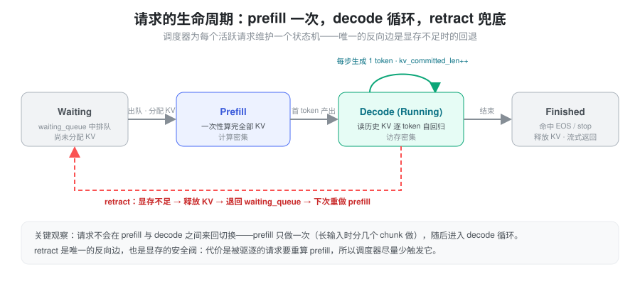
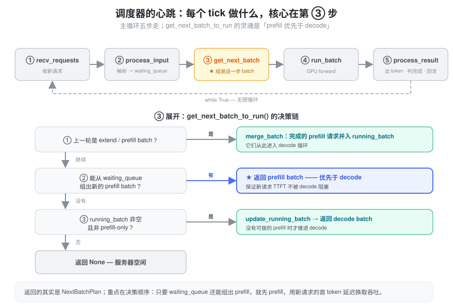
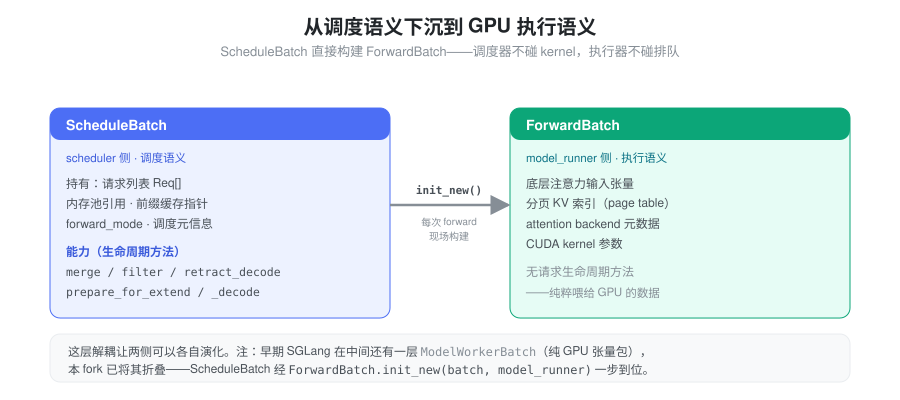
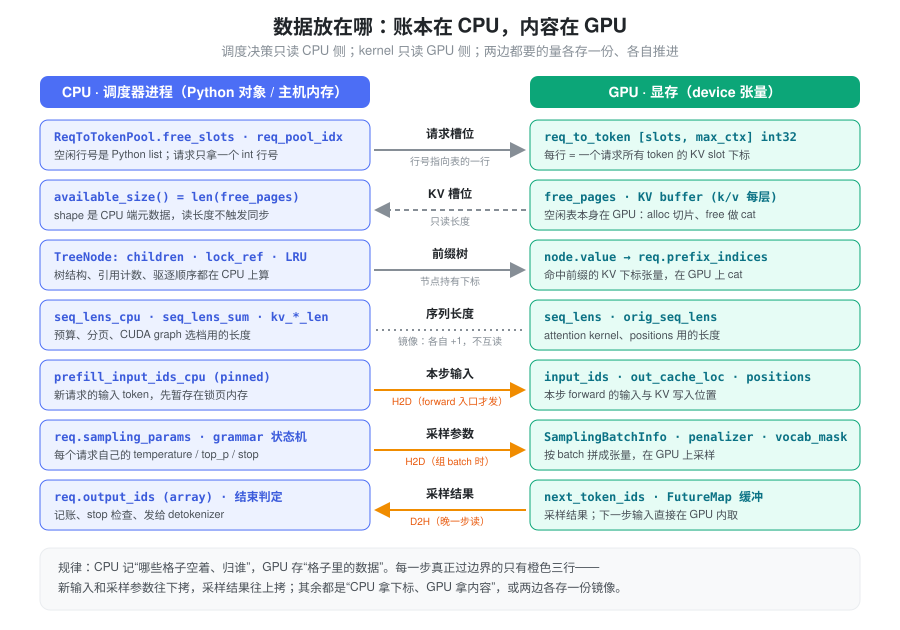
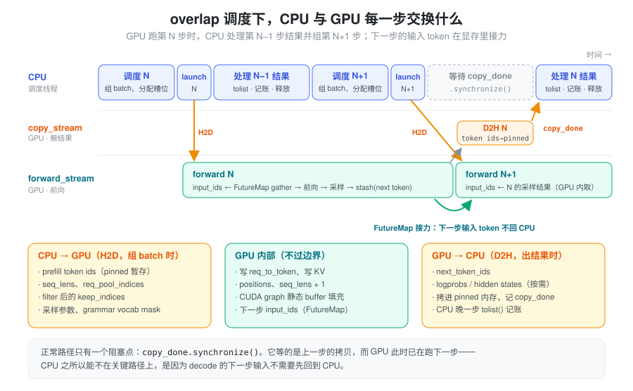
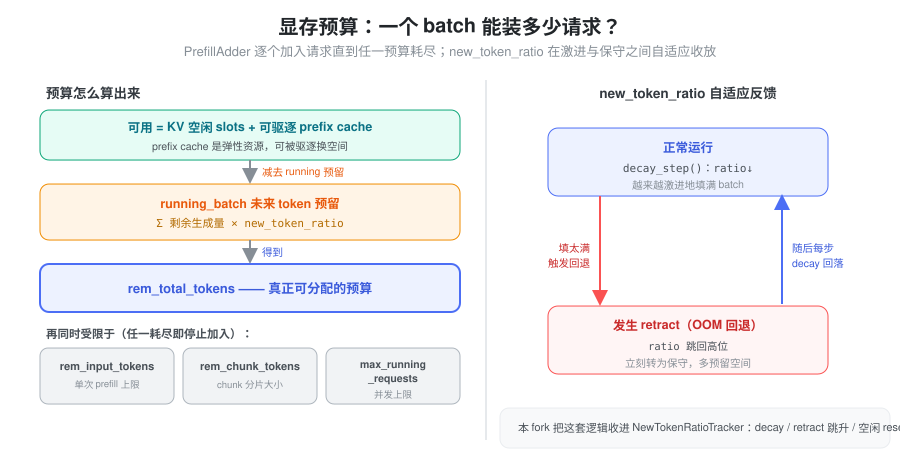
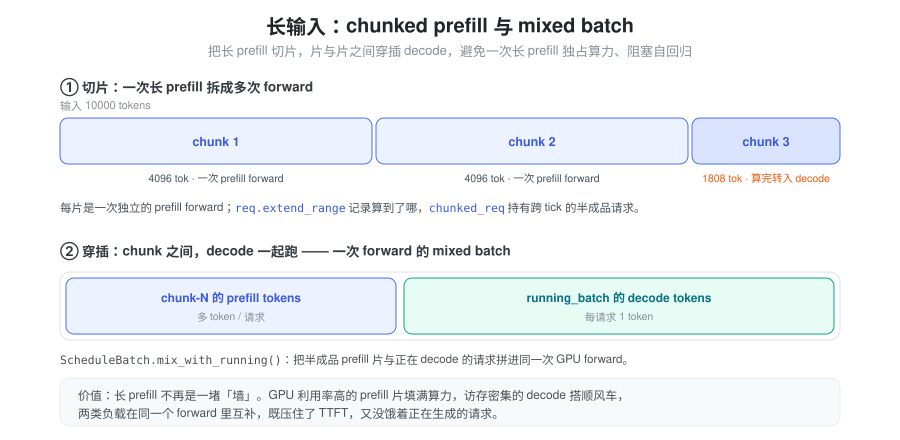

问题：有限显存里，怎么把不断涌入的请求喂进 GPU
LLM 推理不是一次算完的，它天然分成两个阶段，而且两个阶段的硬件特性截然相反：
- Prefill（预填充）：把用户输入的全部 token 一次性送进模型，算出每一层的 KV Cache。token 多、矩阵大，是计算密集操作，GPU 算力利用率高。
- Decode（解码）：逐个生成新 token，每次只算一个，却要读取之前所有 token 的 KV Cache。是访存密集操作，算力大量闲置。
一台在线推理服务要同时面对成百上千个请求：有的刚到达、等着 prefill，有的已经在逐 token 生成。它们都挤在同一块 GPU、同一个固定大小的显存里。于是调度器要回答的核心问题是：
在固定的 KV Cache 容量和计算带宽下，怎样把这些请求不断组织成一个个 batch，交替地做 prefill 和 decode，让整体吞吐最大、同时把延迟压在可控范围内？
难点在于这里的资源既硬又互相挤占：
- KV Cache 池是硬约束。每个 token 在每一层都要占一个 KV slot，池子总量固定。装不下，就必须有人让位。
- Prefix Cache 是弹性资源。SGLang 用 RadixAttention 把已算过的前缀 KV 缓存起来给后续请求复用；但这些缓存在缺显存时可以被驱逐，是“能借也能收回”的空间。
- 计算带宽是另一道闸。单次 forward 的 token 数有上限，而 prefill 和 decode 争的是同一块 GPU——一次超长 prefill 会把正在生成的请求全堵住。
后面所有的机制，都是围绕“如何在这三种资源的夹缝里做取舍”展开的。
把请求看成一个状态机
理解调度器，先理解它调度的对象。一个请求从进入系统到离开，并不是在 prefill 和 decode 之间自由穿梭，而是走一条几乎单向的路径：

这里有两个容易被忽略、却决定整套设计的观察：
- prefill 只做一次，之后就是 decode 循环。请求排队（waiting）→ 做一次 prefill（长输入时拆成几片）算出首 token → 进入 decode，此后每个 tick 生成一个 token，直到命中 EOS 或 stop。它不会退回去重做 prefill——除非……
- retract 是唯一的反向边，也是显存的安全阀。当 KV Cache 不够给 decode 中的请求再分配下一个 token 时，调度器会把某些请求“踢回” waiting queue、释放它们的 KV。代价是这些请求下次要重新 prefill，所以 retract 既是兜底，也是要尽量少踩的红线。
要支撑这条路径，调度器必须为每个“活跃”请求随身携带一组状态。按用途分类，就能看清一个请求对象到底在记什么：
| 类别 | 记录什么 | 为什么需要 |
|---|---|---|
| 身份 | 请求 ID、原始输入 token | 标识请求；retract 后能从头重做 |
| KV 指针 | req_pool_idx → token 位置映射 | 知道这个请求的 KV 存在物理池的哪些位置 |
| 进度 | 已生成的 output_ids、当前序列长度 | 知道生成到哪了、还要生成多少 |
| KV 长度 | 已确认长度 vs 已分配长度 | 区分“写定的 KV”和“预留但可能被回收的 KV” |
| 前缀命中 | prefix_indices、last_node | 命中了多少 prefix cache、接着从哪算 |
| 采样 | temperature、top_p、stop 条件 | 控制生成行为 |
| 分片 | extend_range | 长输入分段 prefill 的进度游标 |
在代码里，这组状态就是 Req
这一个对象。值得一提的是“KV 长度”那一行：本 fork 用
kv_committed_len（已确认写入，每 decode 一步
+1）和
req.kv.kv_allocated_len（预分配、可能回收）两个量，把“写定”和“预留”分得很清——retract
要回收的正是后者。
调度器的心跳：每一步到底做什么
调度器本体是一个无限循环，每个 tick 做五件事；真正的灵魂是第三步——决定“这一步到底跑什么”。

决策链里最重要的一条规则是 prefill 优先于 decode：只要 waiting queue 还能组出一个 prefill batch，这一步就先做 prefill，哪怕此时有一堆请求正等着 decode。这是拿“正在生成的请求多等一步”去换“新请求的首 token 延迟（TTFT）不被拖长”。只有实在没有 prefill 可做时，才推进 decode；两边都空，才返回 None 让服务器歇着。
从调度语义下沉到执行语义
调度器组好的 batch 不能直接丢给 CUDA kernel——它满是“请求排队”“前缀命中”这类调度概念，而 kernel 只认张量和索引。所以 batch 在上 GPU 前要换一层表示：

这层“调度语义 →
执行语义”的转换是一次刻意的解耦：调度器那侧（ScheduleBatch）管请求的合并、过滤、回退；执行器那侧（ForwardBatch）只拿到注意力张量、分页
KV 索引和 kernel
参数，完全不知道请求是怎么排进来的。两边各自演化，互不打扰。
数据住在哪：CPU 管账本，GPU 存内容
上面那层解耦还有一个物理对应：ScheduleBatch
这侧的决策几乎只碰 CPU
内存，ForwardBatch 这侧的计算几乎只碰
显存。想清楚“谁住 CPU、谁住
GPU”，是理解整个调度器为什么快的关键——因为调度器每一步都要做大量判断（谁该进
batch、显存够不够、哪个请求结束了），如果这些判断都要去读显存，就会频繁触发
GPU→CPU 同步，把流水线卡死。
于是整套设计遵循一条朴素的分工：CPU 持有“账本”——哪些格子空着、归谁、每条序列多长；GPU 持有“格子里的内容”——真正的 token、KV、中间张量。 账本小、改动频繁、要被 Python 逻辑随时读取，天然属于 CPU；内容大、只被 kernel 读写，天然属于 GPU。

对着这张分工表，几处设计意图就清楚了：
- 请求槽位：
ReqToTokenPool的空闲行号free_slots是一个普通 Python list，分配就是pop、释放就是append（memory_pool.py:282、alloc/free在291起）。请求对象只随身带一个req_pool_idx整数，指向那张住在显存里的二维表req_to_token（[slots, max_ctx]的 int32，memory_pool.py:279）——行号在 CPU，行的内容在 GPU。 - KV 槽位：token 分配器的空闲页表
free_pages本身是一个 GPU 张量（allocator/token.py:44），分配是切片free_pages[:n]、释放是torch.cat。但调度器判断“够不够”时读的是available_size()，它只取len(free_pages)——张量的长度是 CPU 侧元数据，读它不触发任何同步（allocator/token.py:51）。 - 前缀树：RadixAttention
的整棵树——
TreeNode的孩子、lock_ref引用计数、LRU 驱逐顺序——都在 CPU 上维护和计算（radix_cache.py:242起）；每个节点真正存的value是一段 GPU 上的 KV 下标张量。match_prefix命中后，req.prefix_indices被替换成这些下标在 GPU 上torch.cat的结果（radix_cache.py:426、577）——又是一次“CPU 管结构、GPU 存下标”。 - 序列长度的双份镜像：这是本 fork
里最值得注意的一笔。
seq_lens住在 GPU（给 attention kernel 和 positions 用），同时还维护一份 CPU 镜像seq_lens_cpu（给预算核算、分页计算、CUDA graph 选档用）。decode 推进时，两份各自+1、互不读取（schedule_batch.py:3077-3079）；连seq_lens_sum都是惰性置None、用到才在 GPU 侧重算。这样 CPU 想知道“每条序列多长”时，直接读本地镜像，永远不用从显存里 D2H 读回来。
一句话：凡是“做决策要用、Python 代码要读”的量，CPU 都自己留一份；凡是“只有 kernel 要用”的量，才独占显存。
req.kv_committed_len（已写定）与req.kv.kv_allocated_len（已预留）这两个长度账本也在 CPU 上——retract 要回收的正是两者之间那段。
一步之内，CPU 和 GPU 交换什么
分工明确之后，真正跨越 CPU/GPU 边界的数据其实很少。把一个调度 tick 展开，边界上只有三类流量：组 batch 时往下拷的输入、出结果时往上拷的采样结果，以及一个刻意保留的同步点。

CPU → GPU（H2D，发生在组 batch
时）：新请求的输入 token（先暂存在 pinned 内存
prefill_input_ids_cpu，到 forward
入口才真正下拷，schedule_batch.py:2397、overlap_utils.py:92）、seq_lens
与 req_pool_indices、filter
后保留下来的
keep_indices（schedule_batch.py:3154）、以及按
batch 拼好的采样参数张量和 grammar 的 vocab
mask（sampling_batch_info.py:93 起）。
GPU 内部（根本不过边界）：写
req_to_token（assign_req_to_token_pool
Triton kernel）、写 KV、算
positions、seq_lens + 1、填 CUDA graph
的静态输入 buffer。这些全在显存里完成，CPU
既不读也不写。
GPU →
CPU（D2H，发生在出结果时）：next_token_ids，以及按需的
logprobs / hidden states。它们先被异步拷进 pinned
内存并记一个 copy_done
事件（utils.py:30、scheduler.py:3721），CPU
晚一步才 tolist()
取出来做记账和 stop 判定。
真正精妙的是 overlap 调度怎么把这几股流量藏起来。GPU 跑第
N 步前向时，CPU 并行地处理第 N−1 步的结果、组第 N+1 步的
batch（主循环 scheduler.py:1754
起）。正常路径上只剩一个阻塞点：处理上一步结果前的
copy_done.synchronize()（batch_result_processor.py:202）——它等的是上一步那次小小的
D2H 拷贝，而此刻 GPU 早已在跑下一步，等待基本被盖住。
这里有一个前提常被忽略：decode
的下一步输入是上一步刚采样出的 token。如果走“GPU 采样 → D2H
回 CPU → H2D 再送进去”的老路，每步都得同步一次。本 fork 用
FutureMap 把这条路截在了 GPU
内部：采样结果写进 GPU 上的
output_tokens_buf（按 req_pool_idx
索引），下一步直接
output_tokens_buf[req_pool_indices] 在显存里
gather
出来当输入（overlap_utils.py:107、511）——下一步的输入
token 从头到尾不碰 CPU。CPU 之所以能彻底退出 decode
的关键路径，正是靠这条 GPU 内的 token 接力。
显存预算与自适应回退
prefill 优先固然好，但“一个 batch
到底能塞多少请求”得算清楚，否则一上 GPU 就 OOM。构建 prefill
batch 时，PrefillAdder
像往购物车里逐个加请求，边加边盯着几本预算账，任一账户见底就停：

最精妙的是 new_token_ratio
这个自适应反馈：它给 running batch
里每个请求“未来还要生成多少
token”打一个折扣系数。正常跑的时候它随每一步缓慢衰减（折扣越打越狠
= 越激进地塞满 batch）；一旦真的发生
retract，立刻跳回高位（变保守、多预留）。于是系统自己在“激进填充”与“安全冗余”之间来回找平衡点，一次
OOM 换来一段保守期。本 fork 把这套逻辑收进了
NewTokenRatioTracker。
retract 的细节：触发点是 decode 前的
check_decode_mem()（schedule_batch.py:2809）——它先尝试驱逐
prefix cache 里可回收的条目，再看空闲 slot
够不够放下所有请求的下一个
token；不够就回退。回退谁？默认策略按 (output_len
降序, input_len 升序)
排序挑“代价最小”的：已经生成很多 token
的请求占显存最多，踢掉它释放的空间最大、收益最高（而且它要重做的
prefill 反而最短）。
前缀缓存如何左右调度顺序
SGLang 的招牌优化 RadixAttention 用一棵 Radix Tree 管理 KV 的前缀共享：相同的系统提示、相同的前缀只存一份，新请求若命中就能跳过那段计算。这不只是存储优化，它反过来改变了“先调度谁”：
- LPM（最长前缀匹配）：优先调度与缓存前缀匹配最长的请求，命中最多、省算力最多。
- DFS-Weight：按 Radix Tree 的深度优先权重排序，让共享前缀的请求挨在一起调度，缓存局部性更好。
- In-batch 去重：如果 waiting queue 里好几个请求共享一大段前缀，先放一个进去把那段缓存“焐热”，后面几个就能直接命中，而不是同时各算一遍。
长输入：chunked prefill 与 mixed batch
还剩最后一个资源闸——计算带宽。一次把上万 token 的输入全 prefill，会把 GPU 占满、让所有 decode 请求干等。解法是把长 prefill 切片，并在片与片之间塞进 decode：

两件事叠在一起：chunked prefill 把一次长
forward 拆成几次短 forward（进度由
req.extend_range 记录，跨 tick 的半成品请求挂在
chunked_req 上）；mixed batch
则让某次 forward 同时装下“某个 chunk 的 prefill
tokens”和“正在 decode 的请求各自的 1 个
token”（ScheduleBatch.mix_with_running()）。计算密集的
prefill 片和访存密集的 decode 刚好在同一次 forward
里互补，GPU 两头都不闲着。
小结
Batch
调度的本质，是在固定显存和计算带宽的夹缝里，为“计算密集的
prefill”和“访存密集的 decode”持续地做资源分配与取舍。SGLang
的答案是一组相互配合的抽象：把请求建模成几乎单向的状态机（prefill
一次、decode 循环、retract 兜底），用 prefill 优先的主循环压
TTFT，用 PrefillAdder 加
new_token_ratio
的自适应预算在激进与安全之间自动找平衡，用 RadixAttention
让共享前缀的请求省算力，再用 chunked prefill + mixed batch
把长输入拆开、让两类负载在同一次 forward
里互补。理解了这几个抽象各自化解什么张力，调度器那上千行代码就有了骨架。